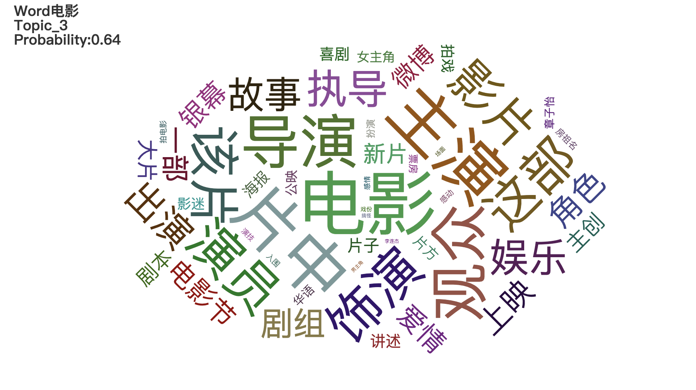

Top2Vec 是一种用于主题建模和语义搜索的算法。**我个人从理解代码和使用代码难度来看， 对于Python小白，BERTopic更适合直接用预训练词向量，而Top2Vec更适合对小规模数据训练词向量后做主题建模。**它自动检测文本中存在的主题并生成联合嵌入的主题、文档和词向量。训练 Top2Vec 模型后，您可以：
- 获取检测到的主题数。
- 获取话题。
- 获取主题大小。
- 获取分层主题。
- 按关键字搜索主题。
- 按主题搜索文档。
- 按关键字搜索文档。
- 找出相似的词。
- 查找类似的文档。
- 使用 RESTful-Top2Vec 公开模型
- 有关其工作原理的更多详细信息，请参阅论文。
亮点
- 自动查找主题数。
- 不需要停用词列表。
- 不需要词干/词形还原。
- 适用于短文本。
- 创建联合嵌入的主题、文档和词向量。
- 内置搜索功能。
它是如何工作的？
该算法做出的假设是，许多语义相似的文档都表明了一个潜在的主题。
第一步是创建文档和词向量的联合嵌入。一旦文档和单词被嵌入到一个向量空间中，算法的目标就是找到密集的文档集群，然后确定哪些单词将这些文档吸引到一起。每个密集区域是一个主题，将文档吸引到密集区域的词就是主题词。
!pip3 install top2vec==1.0.27
0. 代码下载
1. 导入数据
使用某灾难数据集，这里是存在标注的标签，但是我们假设不用label的，仅作为评判Top2vec运行效果的标准。点击cnews.csv下载
from IPython.display import display
import cntext as ct
from top2vec import Top2Vec
import pandas as pd
import jieba
stopwords = ct.load_pkl_dict('STOPWORDS.pkl')['STOPWORDS']['chinese']
df = pd.read_csv('cnews.csv')
df.head()
df.label.value_counts()
Run
时政 120
科技 106
时尚 106
财经 105
家居 103
教育 97
娱乐 96
体育 95
房产 87
游戏 85
Name: label, dtype: int64
2. 清洗数据
一般而言，作中文文本分析，需要把中文分词构造成类西方语言(空格间隔词语的文本)风格。在此期间，顺便将停用词剔除。其实在用top2vec时，不剔除停用词影响也不大。
def clean_text(text):
words = jieba.lcut(text)
words = [w for w in words if w not in stopwords]
return ' '.join(words)
df['cleantext'] = df.text.apply(clean_text)
df.head()
3. 训练模型
Top2vec有一下四个常用参数
Top2vec(documents, min_count, speed, workers)
- documents: 文档列表
- min_count: 词语最少出现次数。低于min_count的词不加入模型中
- speed: 训练速度，参数默认"learn"
- “fast-learn” 速度最快，训练效果最差
- “learn” 速度，训练效果中等
- “deep-learn” 速度最慢，训练效果最佳
- workers: 并行运行数，该值最大取值为电脑CPU的核数。
model = Top2Vec(documents=df['cleantext'].to_list(),
min_count=10,
speed="deep-learn",
workers=8)
Run
2021-12-14 20:21:10,318 - top2vec - INFO - Pre-processing documents for training
2021-12-14 20:21:10,871 - top2vec - INFO - Creating joint document/word embedding
2021-12-14 20:25:06,082 - top2vec - INFO - Creating lower dimension embedding of documents
2021-12-14 20:25:14,645 - top2vec - INFO - Finding dense areas of documents
2021-12-14 20:25:14,683 - top2vec - INFO - Finding topics
# 话题个数
model.get_num_topics()
Run
9
# 各话题数量
topic_sizes, topic_nums = model.get_topic_sizes()
{"topic_sizes":topic_sizes,
"topic_ids":topic_nums}
Run
{'topic_sizes': array([361, 116, 107, 99, 97, 93, 82, 25, 20]),
'topic_ids': array([0, 1, 2, 3, 4, 5, 6, 7, 8])}
4. get_topics
用pyecharts词云图显示话题信息， 为了简化代码，将该功能封装为函数
def gen_wordcloud(topic_words, word_scores, topic_id):
"""
topic_words: 主题词列表
word_scores: 主题特征词的权重得分(词语表征主题的能力)
topic_id: 主题id
"""
import pyecharts.options as opts
from pyecharts.charts import WordCloud
from IPython.display import display
data = [(word, str(weight)) for word, weight in zip(topic_words, word_scores)]
wc = WordCloud()
wc.add(series_name="", data_pair=data, word_size_range=[6, 88])
wc.set_global_opts(
title_opts=opts.TitleOpts(title="Topic_{topic_id}".format(topic_id=topic_id),
title_textstyle_opts=opts.TextStyleOpts(font_size=23)),
tooltip_opts=opts.TooltipOpts(is_show=True))
display(wc.render_notebook())
topic_wordss, word_scoress, topic_ids = model.get_topics(11)
for topic_words, word_scores, topic_id in zip(topic_wordss, word_scoress, topic_ids):
gen_wordcloud(topic_words, word_scores, topic_id)
5. get_documents_topics
get_documents_topics(doc_ids, num_topics=1)
- doc_ids: 待查询文档id列表
- num_topics: 返回某文档可能归属话题的个数
# 查第一条文档的
model.get_documents_topics(doc_ids=[0], num_topics=1)
Run
(array([0]),
array([0.1384481], dtype=float32),
array([['政府', '经济', '政策', '建设', '中方', '发展', '促进', '部门', '留学', '学生', '会议',
'我要', '事务', '日电', '房价', '教育', '国务院', '温家宝', '留学生', '人数', '移民',
'会见', '推动', '申请者', '申请', '官员', '住房', '房屋', '加强', '中国政府', '购房',
'国家', '支付', '楼市', '外交部', '接收', '两国', '原则', '各地', '总理', '战略',
'和平', '框架', '评论', '有序', '装修', '中国', '就业', '友好', '人力资源']],
dtype='<U9'),
array([[0.3623712 , 0.36037514, 0.35219163, 0.35109183, 0.3499857 ,
0.34666985, 0.3426961 , 0.34161803, 0.34010434, 0.3382269 ,
0.33710504, 0.336056 , 0.33598724, 0.33488944, 0.3303768 ,
0.32483265, 0.324798 , 0.32201332, 0.3174801 , 0.3153757 ,
0.3152491 , 0.31338856, 0.31334093, 0.31244045, 0.31202242,
0.30908576, 0.3086405 , 0.30838227, 0.30605763, 0.3053521 ,
0.30474398, 0.30268514, 0.30253592, 0.30242488, 0.30227807,
0.3017046 , 0.30116442, 0.30062813, 0.2996228 , 0.29806197,
0.2972776 , 0.29709277, 0.29706252, 0.29584888, 0.29578486,
0.29524648, 0.2944737 , 0.2939484 , 0.29286712, 0.29246706]],
dtype=float32))
6. search_topics
根据关键词搜索话题，查某词是否属于某话题，属于该主题的概率 search_topics(keywords, num_topics, keywords_neg=None)
- keywords: 关键词列表
- num_topics: 返回话题个数，按照语义相似度从高到低排序
- keywords_neg: 反义词列表
def gen_wordcloud2(query_word, topic_words, word_scores, topic_id, topic_probability):
"""
query_word: 待查询词
topic_words: 主题词列表
word_scores: 主题特征词的权重得分(词语表征主题的能力)
topic_id: 主题id
topic_probability: 主题概率
"""
import pyecharts.options as opts
from pyecharts.charts import WordCloud
from IPython.display import display
data = [(word, str(weight)) for word, weight in zip(topic_words, word_scores)]
wc = WordCloud()
wc.add(series_name="", data_pair=data, word_size_range=[6, 88])
title = """Word{query_word}\nTopic_{topic_id}\nProbability:{probability:.2f}""".format(query_word=query_word,
topic_id=topic_id,
probability=topic_probability)
wc.set_global_opts(
title_opts=opts.TitleOpts(title=title,
title_textstyle_opts=opts.TextStyleOpts(font_size=18)),
tooltip_opts=opts.TooltipOpts(is_show=True))
display(wc.render_notebook())
query_word = "电影"
topic_wordss, word_scoress, topic_scores, topic_ids = model.search_topics(keywords=[query_word], num_topics=4)
for topic_words, word_scores, topic_score, topic_id in zip(topic_wordss, word_scoress, topic_scores, topic_ids):
if topic_score>0.5:
gen_wordcloud2(query_word=query_word,
topic_words=topic_words,
word_scores=word_scores,
topic_id=topic_id, topic_probability=topic_score)

7. query_topics
根据一段文本寻找最符合该文本的话题 query_topics(query, num_topics)
- query: 查询文本，注意是用空格间隔词语的文本
- num_topics: 返回的话题数
返回话题特征词列表， 话题特征词权重， 话题概率， 话题id
querytext = '刘晓庆 55 岁 近日 颁奖礼 刘晓庆 一袭 宝蓝色 超低 胸 V 领 长裙 亮相 轻薄 蕾丝 奢华 皮草 艳丽 色彩 翠绿'
topic_words, word_scores, topic_scores, topic_ids = model.query_topics(query=querytext,
num_topics=2)
print('可能归属的话题有: ', topic_ids)
print('归属于该话题的概率', topic_scores)
Run
可能归属的话题有: [1 4]
归属于该话题的概率 [0.32036728 0.1276904 ]
8. search_documents_by_keywords
根据关键词，筛选文档
search_documents_by_keywords(keywords, num_docs, keywords_neg=None, return_documents=True)
#文档， 语义相关性， 文档id
docs, scores, doc_ids = model.search_documents_by_keywords(keywords=['搭配'],
num_docs=3,
keywords_neg=None,
return_documents=True)
for doc, score, doc_id in zip(docs, scores, doc_ids):
print(f"Document: {doc_id}, Semantic similarity: {score}")
print(doc)
print('----------')
print()
Run
Document: 106, Semantic similarity: 0.4943176805973053
白色 短裙 百变 休闲 感 要点 一定 敞开 衬衫 配合 牛仔裤 休闲 感 短裤 衬衫 短 敞开 显得 好好 穿 裤子 搭配 七分裤 遮住 臀部 长度 关键 尽量 选择 艳丽 颜色 带 出 青春 感 NO.3 白色 短裙 tips : 白色 短裙 + 粉色 上衣 这是 一套 减龄 百分百 搭配 白色 短裙 本来 清纯 粉色 上衣 搭配 更加 具有活力 tips : 白色 短裙 + 抹胸 + 外套 想要 性感 一点 就加 一件 抹胸 抹胸 胸前 构造 曲线 完美 再加 外套 保暖 得体 看似 简单 一款 搭配 其实 暗地里 偷偷地 修饰 身材
----------
Document: 870, Semantic similarity: 0.4483542740345001
组图 看达人 演绎 豹纹 军装 风 导语 懂得 潮流 总是 知道 适合 今冬 流行 亮点 太 军装 豹纹 类似 民族风情 想要 知道 搭配 快 看看 时尚 达 穿 军绿色 宽松 款 大衣 不失 俏皮 味道 高腰 设计 短裙 有效 提升 腰线 衬托出 修长 美腿 豹纹 今年 冬季 抢眼 搭配 元素 加上 驼色 针织衫 灰色 围巾 暖 棕色 手 挎包 整体 色调 统一 迷人 棕色 蓝色 结合能 眼前一亮 简洁 款式 依然 突显 独特 品味 宽松 针织 外套 衬托出 优美 身形 搭配 同样 沉闷 黑色 包包 性感 丝袜 装扮 依然 透露 出 迷人 气息 立领 衬衫 加上 深黄 高腰 裤 摩登 感 十足 随意 披上 外套 更显 慵懒 个性 法式 风情
----------
Document: 450, Semantic similarity: 0.4471719563007355
街 拍 爱 招摇过市 毛茸茸 ( 组图 ) 导语 皮草 每个 冬天 可能 丢弃 每个 需要 温暖 早些 相比 人造皮 草比 真皮 草 风头 更劲 时尚 环保 大牌 秀 场上 超模 一个个 穿着 人造皮 草 “ 招摇过市 ” 之后 街头 潮人 没有 理由 拒绝 外形 酷酷 这件 气场 皮草 单品 配合默契 摇滚 风 配饰 搭配 黑色 皮草 长 背心 更显 利落 酷酷 黑色 皮草 搭配 蓝色 衬衣 不同 感觉 加上 下半身 底裤 时髦 包包 颜色 提亮 整身 装扮 抹胸 式 皮草 特点 高贵典雅 适合 搭配 连衣裙 装饰 增添 时尚 美感 复古 圆点 连衣裙 搭配 宽松 棕色 皮草 衣 名媛 感觉 典雅 淑女 短款 黑色 皮草 搭配 贴身 仔裤 搭配 长靴 潇洒 帅气 茸茸 帽子 增添 不少 甜美 感
----------
9. search_documents_by_topic
根据指定的topic_id， 显示该主题前num_docs个文档，显示的文档是根据概率从高到低降序显示
#查看topic4的前5条文档
topic_id = 4
documents, document_scores, document_ids = model.search_documents_by_topic(topic_num=topic_id, num_docs=5)
for doc, score, doc_id in zip(documents, document_scores, document_ids):
print(f"Document: {doc_id}, Semantic similarity: {score}")
print("-----------")
print(doc)
print("-----------")
print()
Run
Document: 905, Semantic similarity: 0.4941929578781128
-----------
现场 阿联 第三节 未 亮相 奇才 连续 3 记 重扣 逆转 比分 新浪 体育讯 北京 时间 4 2 奇才 主场 迎战 联盟 垫底 骑士 奇才 新秀 后卫 约翰 - 沃尔因 一场 对阵 热火 比赛 斗殴 禁赛 一场 伤愈 复出 安德雷 - 布 莱切 回到 首发 阵容 奇才 本赛季 首场 客场 胜利 面对 骑士 取得 当时 奇才 115 - 110 击败 对手 上半场 骑士 命中率 达到 53.8% 奇才 仅 44% 骑士 希克 森 ( 16 ) 塞 申斯 ( 12 ) 得分 双 奇才 布 莱切 ( 22 ) 麦基 ( 12 ) 埃文斯 4 投 0 仅 抢下 1 篮板 易建联 上场 7 08 2 投 0 抢下 3 篮板 异地 再战 埃文斯 终于 得分 抢断 吉后 犯规 两罚 命中 吉 随即 突破 上篮 命中 回敬 球 杰 弗斯 三分 不进 吉 抢下 篮板 上篮 再进 一球 布 莱切 中投 命中 霍林斯 篮下 出手 不进 布 莱切 抢下 篮板 此后 克劳福德 连续 突破 先是 助攻 麦基 扣篮 盖掉 戴维斯 投篮 助攻 布 莱切 扣篮 戴维斯 运球 被断 布 莱切 传给 杰 弗斯 一记 暴扣 奇才 连续 3 次 颇具 气势 扣篮 连得 6 反超 骑士 1 骑士 请求 暂停 回到 比赛 吉 上篮 不进 麦基 低位 单打 不进 布 莱切 抢下 篮板 3 得手 骑士 进攻 24 违例 奇才 越战越勇 克劳福德 身体 失去 重心 情况 仍然 将球 投进 一个打 3 骑士 连续 吉 挺身而出 三分 命中 个人 已经 得到 10 此人 本赛季 短暂 效力 奇才 麦基 中投 不进 布 莱切 抢下 前场 篮板 将球 放进 麦基 防守 领到 犯规 希克 森两罚 命中 麦基 强攻 造成 霍林斯 犯规 两罚 一中 戴维斯 三分 不进 克劳福德 跑 投 命中 戴维斯 突分 霍林斯 暴扣 命中 回过头来 克劳福德 助攻 麦基扣 劲 爆 哈兰 高迪 中投 不进 克劳福德 投篮 偏出 布 莱切 3 报价 连续 抢 篮板 进攻 最后 犯规 两罚 一中 现在 已经 得到 32 18 篮板 布 莱切 底线 遭 报价 分球 埃文斯 三分 命中 霍林斯 篮下 重扣 奇才 请求 暂停 布 莱切 继续 得分 吉布森 上篮 命中 克劳福德 中投 不进 抢下 篮板 杰 弗斯 运球 突破 犯规 两罚 命中 易建联 节 没有 登场 第三节 比赛 结束 骑士 82 - 83 奇才 ( 草头 王 )
-----------
Document: 689, Semantic similarity: 0.4917592704296112
-----------
直击 康大 内线 一柱擎天 13 优势 到手 胜利在望 新浪 体育讯 北京 时间 4 5 ( 休斯敦 时间 4 4 ) 消息 NCAA Final 4 总决赛 休斯敦 Reliant 球馆 举行 比赛 进入 最后 6 分钟 本场 表现 十分 亮眼 康涅狄格 内线 阿莱克斯 - 奥里 瓦基接 队友 直传 空切 篮下 扣篮 得分 打成 2 + 1 目前 已经 拿下 10 9 篮板 3 封盖 巴特勒 仍然 没 解决 进攻 端的 问题 下半场 23 投 仅仅 3 屡次 外线 空挡 出手 均 打铁 告终 仅仅 入账 8 目前 康大 已经 取得 13 优势 胜利在望 ( silencer )
-----------
Document: 425, Semantic similarity: 0.47035443782806396
-----------
今日 数据 趣谈 魔兽 悲情 似 张大帅 基德 焕发 第二 春 新浪 体育讯 北京 时间 4 17 NBA 季后赛 正式 开打 进行 4 场 比赛 以下 今日 比赛 诞生 有趣 数据 今日 首场 季后赛 芝加哥 公牛 第四节 剩 4 分钟 仍以 88 - 98 落后 接下来 打出 16 - 1 攻击 波 主场 一举 逆转 印第安纳 步行者 取胜 继 2004 之后 NBA 季后赛 舞台 再次出现 终场 前 4 分钟 落后 两位数 最终 翻盘 成功 案例 2004 5 9 西部 决赛 明尼苏达 森林狼 萨克拉门托 国王 比赛 森林狼 同样 终场 前 4 分钟 仍以 78 - 88 落后 接下来 打出 16 - 1 ( 惊人 相似 ) 最终 94 - 89 逆转 取胜 今天 公牛 逆转 步行者 比赛 德里克 - 罗斯 砍 39 罚球 21 投 19 2008 洛杉矶 湖人 对阵 犹他 爵士 一场 季后赛 科比 - 布莱恩特 创下 单场 罚球 23 投 21 季后赛 纪录 罗斯 位居 全场 三分球 9 次 出手 竟无一 命中 季后赛 历史 此前 两次 类似 案例 2008 奥兰多 魔术 对阵 多伦多 猛龙 一场 比赛 拉沙德 - 刘易斯 三分球 9 投 0 一次 熟知 1994 总决赛 第七场 约翰 - 斯塔克 斯 三分 线外 11 投 0 纽约 尼克斯 负于 休斯敦 火箭 冠军 擦肩而过 今天 亚特兰大 老鹰 客场 战胜 奥兰多 魔术 比赛 老鹰 五名 球员 得分 低于 13 — — 乔 - 约翰逊 ( 25 16 投 9 ) 贾马尔 - 克劳福德 ( 23 14 投 7 ) 艾尔 - 霍福德 ( 16 14 投 7 ) 约什 - 史密斯 ( 15 12 投 6 ) 科克 - 辛里奇 ( 13 10 投 6 ) 该队 过去 199 场 季后赛 尚属 首次 老鹰队 史上 一次 出现 这种 盛况 1966 4 14 131 - 127 战胜 洛杉矶 湖人 比赛 当时 书写 纪录 五人 里奇 - 古尔林 克里夫 - 哈根 泽尔莫 - 比蒂 比尔 - 布里奇斯 乔 - 考 德维尔 今天 负于 老鹰 比赛 德怀特 - 霍华德 ( 46 ) 贾 米尔 - 尼尔森 ( 27 ) 砍 73 队友 总共 仅 拿下 20 魔术 最终 93 - 103 负于 更为 均衡 对手 NBA 历史 8 支 球队 一场 季后赛 比赛 有过 两名 球员 联手 砍 全队 至少 75% 得分 1 队 取胜 追溯到 1950 4 9 当年 总决赛 第一场 比赛 乔治 - 麦肯 得到 37 吉姆 - 波 拉德 得到 14 率领 明尼阿波利斯 湖人 68 - 66 战胜 锡 拉丘兹 民族 ( 费城 76 前身 ) 7 队则 败北 得到 46 霍华德 抢下 19 篮板 常规 时间 取得 1975 4 19 布法罗 勇敢者 ( 洛杉矶 快船 前身 ) 战胜 华盛顿 子弹 ( 华盛顿 奇才 前身 ) 一场 季后赛 效力 勇敢者 鲍勃 - 麦卡 杜 同样 没有 加时赛 情况 砍 50 21 篮板 威尔特 - 张伯伦 一场 季后赛 常规 时间 砍 46 19 篮板 球队 却输 ( 事实上 张大帅 生涯 3 场 比赛 取得 数据 竟 败北 ) 刚 谢幕 本赛季 常规赛 杰森 - 基德 仅 两场 比赛 得分 达到 20 + 1 20 对阵 湖人 比赛 砍 赛季 最高 21 今天 达拉斯 小牛 主场 战胜 波特兰 开拓者 比赛 砍 24 命中 6 记 三分球 一场 季后赛 比赛 砍 20 + 得分 刷新 常规赛 创下 赛季 新高 NBA 历史 壮举 球员 如今 38 岁 基德 年龄 最大 成为 NBA 历史 一场 季后赛 比赛 单场 命中 6 记 三分球 年龄 最大 球员 此前 纪录 雷吉 - 米勒 2002 创下 当时 36 岁 今天 小牛 战胜 开拓者 比赛 德克 - 诺维茨基 第四节 13 次 罚球 出手 命中 追平 迈克尔 - 乔丹 纪录 1990 - 91 赛季 季后赛 一场 公牛 底特律 活塞 比赛 乔丹 单节 命中 13 次 罚球 率队 105 - 97 取胜 最终 公牛 获得 赛季 总冠军 今天 迈阿密 热火 战胜 费城 76 比赛 克里斯 - 波什 得到 25 12 篮板 勒布朗 - 詹姆斯 得到 21 14 篮板 他俩 队友 参加 首场 季后赛 前 一个 赛季 各为其主 接下来 赛季 并肩作战 季后赛 首场 比赛 砍 得分 20 + 篮板 10 + 组合 波什 詹姆斯 之前 无先例 ( 魑魅 )
-----------
Document: 155, Semantic similarity: 0.45704954862594604
-----------
现场 麦蒂 返场 销魂 跳投 两 连击 小拜 纳姆 单节 11 新浪 体育讯 北京 时间 4 6 华盛顿 奇才 主场 迎战 底特律 活塞 此前 球队 已经 客场 两连胜 若能 战胜 活塞 奇才 本赛季 首次 迎来 三连胜 异地 再战 埃文斯 中投 命中率 先 得分 拜纳姆 中投 不进 克劳福德 一人 带球 运 前场 对手 尚未 落位 情况 直接 出手 投篮 命中 这种 投篮 欠缺 考虑 根本 没有 战术 配合 全 个人 手感 遇到 防守 稍 一点 球队 沃尔 抢断 埃文斯 直接 暴扣 奇才 反超 4 活塞 请求 暂停 沃尔 报价 对手 拜纳姆 得到 机会 三分 出手 命中 布 莱切 上篮 得手 门罗 助攻 威尔 考克斯 扣篮 命中 埃文斯 三分 不进 拜纳姆 突破 上篮 命中 威尔 考克斯 拿布 莱切 没有 办法 运球 进攻 威尔 考克斯 只能 伸直 手臂 不断 滑步 被布 莱切 强投 命中 活塞 拜纳姆 发力 突破 上篮 命中 布 莱切 中投 不进 拜纳姆 卷土重来 造成 沃尔 犯规 两罚 命中 个人 已经 得到 11 门罗 抢断 布 莱切 普林斯 上篮 命中 活塞 反超 3 麦基 传球 失误 奇才 请求 暂停 威尔 考克斯 篮下 强打 奇才 反击 埃文斯 上篮 命中 普林斯 糟糕 状态 继续 中投 偏出 布 莱切 运球 单打 活塞 两名 内线 屡试不爽 造成 门罗 犯规 两罚 命中 汉密尔顿 中投 不进 威尔 考克斯 抢下 前场 篮板 直接 扣篮 命中 布 莱切 继续 发威 转身 摆脱 上篮 命中 拜纳姆 三分 偏出 球 砸 远 活塞 球员 退守 不及 克劳福德 轻松 上篮 命中 沃尔 中投 不进 拜纳姆 反击 遭 侵犯 两罚 命中 个人 单节 已经 得到 11 布 莱切 对手 包夹 中投 偏出 普林斯 跑 投 命中 活塞 反超 一分 克劳福德 中投 打铁 拜纳姆 没能 命中 三分 麦蒂 回到 赛场 塞拉芬 进攻 犯规 普林斯 中投 不进 门罗 补篮 命中 麦蒂断 球 直接 中投 命中 布 莱切 走步 麦蒂 假动作 点飞 克劳福德 投篮 再进 第三节 比赛 结束 活塞 81 - 78 奇才 ( 草头 王 )
-----------
Document: 254, Semantic similarity: 0.45255911350250244
-----------
奇才 vs 步行者 前瞻 走出 客场 阴影 斗狠 东部 老八 新浪 体育讯 北京 时间 4 7 奇才队 客场 挑战 东区 第八 步行者 目前 奇才 客场 战绩 3 胜 35 负 最近 客场 两连胜 奇才队 背靠背 作战 今天 主场 107 - 105 险胜 活塞 球队 一举 拿到 赛季 最长 三连胜 实际上 这是 奇才队 2007 - 08 赛季 以后 球队 第一个 赛季 三连胜 这场 比赛 奇才 惊人 获得 35 次 罚球 沃尔一人 包办 16 次 全场 得到 26 12 次 助攻 6 篮板 4 次 抢断 布 莱切 无疑 三连胜 第一 功臣 连胜 期间 场均 得到 29 15.3 篮板 克劳福德 同样 火爆 异常 一位 前锋 首发 埃文斯 表现 低估 活塞 比赛 埃文斯 13 投 9 中射下 20 沃尔 拿到 职业生涯 首个 三连胜 “ 联盟 留下 标签 一名 菜鸟 证明 一部分 很多 想 站 球场上 一分钟 全力以赴 ” 奇才 三连胜 对手 名副其实 鱼腩 球队 无论如何 三连胜 这支 弱旅 一个 不小 激励 尤其 伤病 满营 情况 目前 球队 6 可能 赛季 结束 前 无法 归队 包括 得分王 尼克 - 杨 约什 - 霍华德 拉沙德 - 刘易斯 布克 恩戴 耶 卡 蒂尔 - 马丁 步行者 35 胜 43 负 暂居 东部 第八 目前 东部 前七 已经 锁定 季后赛 剩下 第八名 悬念 步行者 领先 第九位 山猫 2.5 个胜场 领先 10 位 雄鹿 3.5 个胜场 剩下 4 场 比赛 情况 悬念 并不大 明天 山猫 雄鹿 迎战 强敌 ( 魔术 热火 ) 步行者 机会 扩大 领先 场次 优势 球队 头号 得分手 格兰杰 状态 过去 5 场 比赛 得分 20 以下 最近 三场 三分球 12 投 3 汉斯 布鲁在 过去 6 场 比赛 陷入 挣扎 场均 9.3 5.7 篮板 ( 之前 11 场 比赛 贡献 20.6 7.8 篮板 ) 一场 比赛 步行者 12 输给 黄蜂队 主教练 沃格尔 称之为 “ 惨痛 失败 ” 本赛季 两队 战成 2 - 1 步行者 赢下 最近 两次 交锋 两场 比赛 奇才 命中率 均 低于 40% 总 失误 高达 41 次 预计 两队 首发 奇才 沃尔 克劳福德 埃文斯 布 莱切 麦基 步行者 科 里森 格兰杰 乔治 汉斯 布鲁 希伯特 ( 木瓜 丁 )
-----------
documents, document_scores, document_ids = model.search_documents_by_keywords(keywords=["搭配", "高跟鞋"], num_docs=5)
for doc, score, doc_id in zip(documents, document_scores, document_ids):
print(f"Document: {doc_id}, Semantic similarity: {score}")
print("-----------")
print(doc)
print("-----------")
print()
Document: 727, Semantic similarity: 0.5883481502532959
-----------
组图 冷气 办公室 连衣裙 配小 坎肩 美国 设计师 Diane Von Furstenberg 曾经 感觉 女人 穿 连衣裙 女人 找到 一件 适合 dream dress 重要 无需 费神 搭配 单穿 连身 优雅 飞扬 裙摆 似乎 告诉 女 连衣裙 玩起 High Fashion 变脸 游戏 DKNY 绿色 连衣裙 新品 未 定价 H & M 黑色 外套 新品 未 定价 Agatha 配件 新品 未 定价 C . Banner 高跟鞋 新品 未 定价 低 V 领 连衣裙 秀出 属于 性感 更好 展现出 颈部 线条 搭配 修身 剪裁 西装 短款 皮手套 极具 欧美 明星 范儿 细 高跟鞋 更好 突出 双腿 长度 整体 显得 轻盈 不少 On & on 米色 连衣裙 新品 未 定价 Asobio 针织 外套 RMB 449 Kookai 金色 腰带 Jc
-----------
Document: 435, Semantic similarity: 0.5440454483032227
-----------
组图 秋冬 优雅 妖娆 女星 爱 裸 色系 导语 裸色 优雅 代名词 女星 近来 誓 裸色 进行 到底 无论是 徐若 ? 性感 乐基儿 气质 搭配 各色 礼服 赏心悦目 娇俏 款式 更是 大饱眼福 徐若 ? 飘逸 丝带 立刻 彰显 天王 嫂 贵妇 气质 袁咏仪 翻领 西装 气质 非凡 裸色 短款 紧身 西装 皮质 面料 彰显 个性 夹带 一点 蕾丝 装饰 女性 柔美 油然而生 搭配 碎花 蛋糕 裙 气质 非凡
-----------
Document: 870, Semantic similarity: 0.523485541343689
-----------
组图 看达人 演绎 豹纹 军装 风 导语 懂得 潮流 总是 知道 适合 今冬 流行 亮点 太 军装 豹纹 类似 民族风情 想要 知道 搭配 快 看看 时尚 达 穿 军绿色 宽松 款 大衣 不失 俏皮 味道 高腰 设计 短裙 有效 提升 腰线 衬托出 修长 美腿 豹纹 今年 冬季 抢眼 搭配 元素 加上 驼色 针织衫 灰色 围巾 暖 棕色 手 挎包 整体 色调 统一 迷人 棕色 蓝色 结合能 眼前一亮 简洁 款式 依然 突显
-----------
Document: 522, Semantic similarity: 0.4756317138671875
-----------
女星 争当 蓝色妖姬 & nbsp ; 英国 气质 女演员 瑞切尔 ・ 薇 兹 时尚 点评 英国 气质 女演员 瑞切尔 · 薇 兹 ( Rachel Weisz ) 美貌 非常 头脑 修身 印花 连衣裙 搭配 抢眼 棕红色 短 夹克 非常 好看 搭配 黑色 罗马 feel 高跟鞋 特别 有潮味 时尚 点评 身材 不算 瘦 女星 Lea Michele 搭配 起来 非常 特色 一味 地瘦 风格 满是 褶皱 裙子 非常 修身 亮眼 颜色 非常
-----------
Document: 707, Semantic similarity: 0.47334203124046326
-----------
组图 黑丝 短裙 上阵 5 旬 女星 胜过 90 红星 导语 气温 越来越低 女星 不畏 严寒 纷纷 穿着 短裙 透视装 出席 活动 一番 比拼 不难 发现 气质 年轻 难得 厉害 一起 看看 刘晓庆 55 岁 近日 颁奖礼 刘晓庆 一袭 宝蓝色 超低 胸 V 领 长裙 亮相 轻薄 蕾丝 奢华 皮草 艳丽 色彩 翠绿 首饰 配上 短小 精炼 波波 头 瞬间 减龄 15 岁 张曼玉 46 岁 一向 气质 型 美女 著称 反倒 少 繁琐 修饰 刻意 打扮 超级 简单 Lanvin for H & M 斜肩 礼裙 搭配 一双 皮质 手套
-----------
10. get_topic_hierarchy
对话题进行分类，需要
- 先执行model.hierarchical_topic_reduction
- 再执行model.get_topic_hierarchy。
# 将话题分为2类
model.hierarchical_topic_reduction(num_topics=2)
model.get_topic_hierarchy()
Run
[[7, 6, 1, 8, 5, 4, 3], [2, 0]]
11. similar_words
查找相似词， 该方法其实也可以用于扩充词典。
similar_words(keywords, num_words, keywords_neg=None)
- keywords: 待查询关键词列表
- num_words: 返回相似词个数
- keywords_neg: 指定反义词列表
# 查找【增进】的最相似的10个词
model.similar_words(keywords=["增进"],
num_words=10,
keywords_neg=None)
Run
(array(['两国关系', '两国', '温家宝', '王刚', '战略', '友好', '中欧', '政治', '会见', '人民'],
dtype='<U4'),
array([0.50498132, 0.49835259, 0.4636392 , 0.45802986, 0.45299921,
0.44836198, 0.43550295, 0.43471974, 0.43099192, 0.42711113]))
12. save
训练不易， 记得保存模型。
model.save('随便起个名字.pkl')